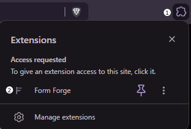
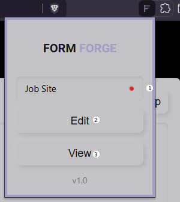
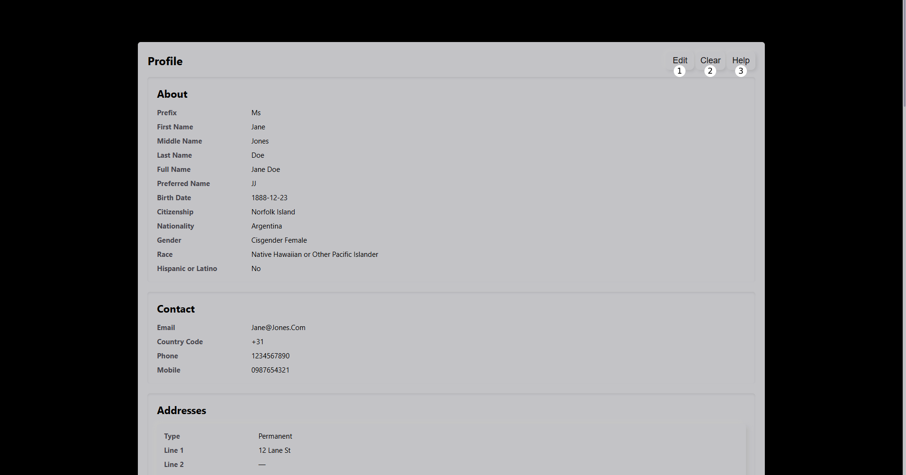
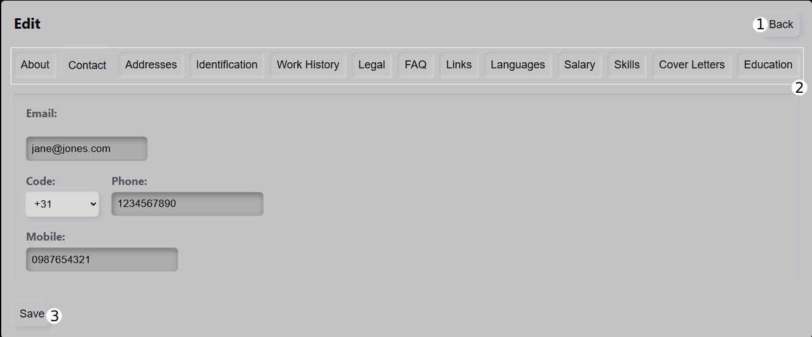
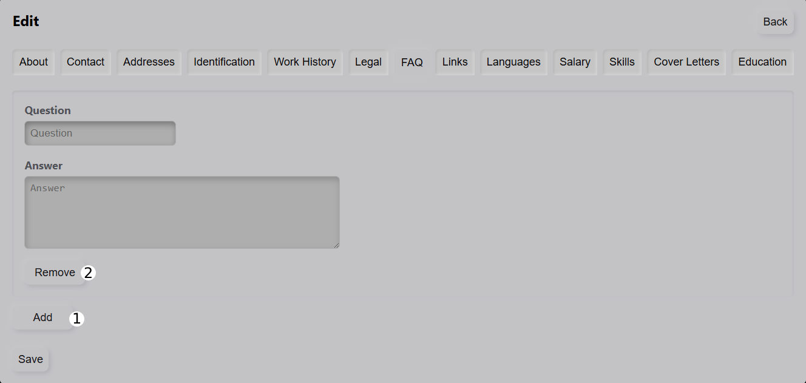
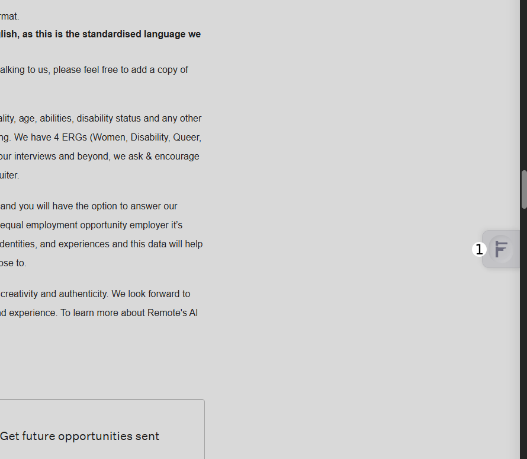
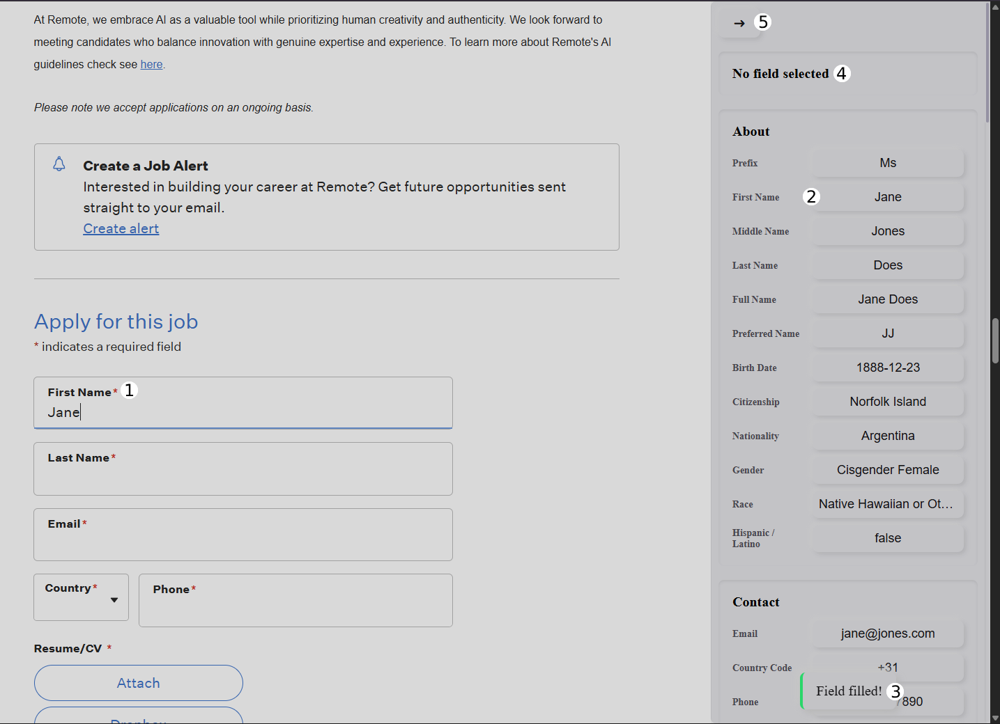
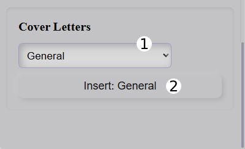

The popup is your control center. Use it to manage your profile, access help, and check whether the current website is supported.

Your profile stores the information Forge uses when filling job applications.

Your saved information is displayed here in read-only mode. Use the controls above to manage your profile.
Fill in your information and save your profile. Fields such as contact details, skills, and other information can be entered directly. Some sections allow multiple entries such as experience, education, and projects.

Some sections support multiple entries, allowing you to add items such as work experience, education, and projects.

When visiting a supported job website, Forge can help fill application fields using the information saved in your profile.

The panel can also open when interacting with a supported input field. Selecting a field allows Forge to know where information should be inserted.

Some saved information, such as cover letters or FAQ answers, can be selected before inserting.

Tips for getting the best results with Forge.